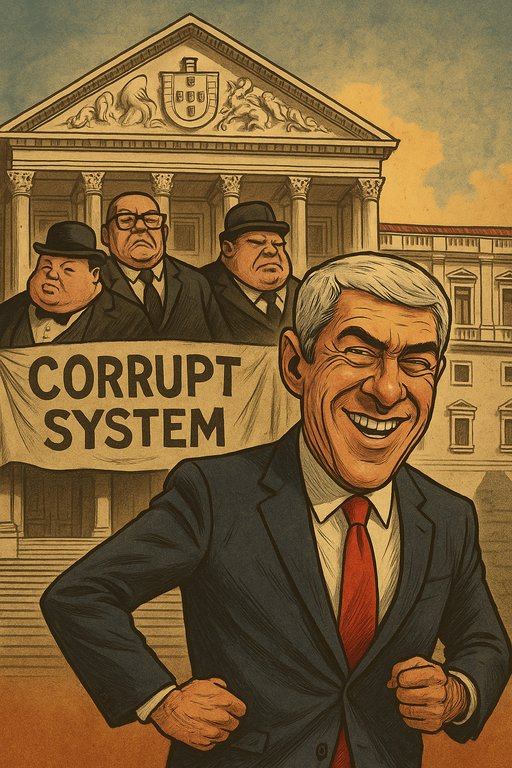

Publicado em 2025-07-02 19:46:37
Crónica incisiva e com uma pitada de sátira sobre o julgamento mais simbólico da democracia portuguesa
Amanhã, não se senta apenas José Sócrates no banco dos réus. Sentam-se, em espírito e cumplicidade, as últimas cinco décadas de uma democracia que jurou servir o povo, mas que se tem fartado de o trair. Começa, enfim, o julgamento do ex-primeiro-ministro socialista, figura carismática e polémica, acusado de corrupção, branqueamento de capitais, falsificação de documentos e outros delitos que fariam corar um pirata de estimação.
Mas não nos enganemos: o que está em julgamento não é um homem, é um regime. Um sistema que se disfarçou de democrático, mas que operou como clube privado — onde os amigos se promovem, os negócios se lavam e o interesse público se despe de sentido.
De Abril a Marquês: uma linha tortuosa
A Revolução dos Cravos prometeu liberdade, justiça e prosperidade. Meio século depois, temos liberdade formal, justiça morosa e prosperidade distribuída por poucos — com cartões de visita em empresas do Estado, bancos falidos e sociedades offshore. O caso Sócrates — e a teia de relações que o envolve, incluindo banqueiros como Ricardo Salgado, testas-de-ferro como Carlos Santos Silva e funcionários públicos aos molhos — é o ponto culminante de um percurso onde o poder político e económico se entrelaçaram como dançarinos de um tango obsceno.
Portugal viu crescer a dívida, minguar os salários e emigrar os sonhos. E enquanto isso, alguns enriqueceram de forma tão rápida quanto misteriosa. Mas sempre com explicações prontas: foi um empréstimo do amigo, um investimento de ocasião, um acaso feliz. O Ministério Público vê indícios, a defesa vê coincidências. A justiça vê-se... atrasada.
O Palco do Julgamento: uma tragédia nacional
Com 20 arguidos, centenas de testemunhas e toneladas de documentos, o julgamento que começa é já, antes do veredicto, uma sentença ao país. Os tribunais são lentos, as leis ambíguas e os juízes frequentemente pressionados. José Sócrates, com o seu estilo teatral e vocabulário rebuscado, promete transformar a audiência em palco. E o povo? Esse assiste, entre o tédio e o espanto, como quem revê a telenovela do dia anterior.
A Europa observa, entre o escândalo e o silêncio. Afinal, Portugal é sempre aquele aluno bonzinho que não faz ondas... até que se descobre que copiou o trabalho todo. E não se esqueça, caro leitor: Sócrates recorreu para o Tribunal Europeu dos Direitos Humanos — não por ter sido injustiçado, mas por considerar “abusiva” a forma como foi investigado. O lobo, enfim, queixando-se dos cães.
Epílogo de um Sistema em Ruínas
Este julgamento é uma oportunidade histórica. Não só para julgar factos, mas para confrontar um sistema político-judicial que durante anos permitiu, incentivou e lucrou com esquemas nebulosos. Se terminar apenas com uma multa e uns anos de prisão suspensa, não será justiça. Será uma performance cínica no teatro da impunidade.
Sócrates foi um dos maiores canalhas da política nacional de todos os tempos, mas o regime instituido de partidos políticos em 25 Abril de 1974, não tem sido melhor. Foi este regime que permitiu, e continua a permitir, personagens como José Sócrates.
Que o povo português esteja atento. Que se faça deste julgamento não um fim, mas o início de uma catarse nacional. E que, entre a tragédia e a sátira, reste ainda alguma esperança. Porque rir é preciso — mas mudar é urgente.
Artigo da autoria de Francisco Gonçalves e Augustus Veritas
Para mais artigos como este, subscreva a newsletter "Fragmentos da Lucidez" ou visite www.fragmentoscaos.eu.
"O julgamento de José Sócrates não é o julgamento de um homem — é o julgamento de um regime. Um regime que, com cara de democracia, escondeu um polvo de compadrios, bancas paralelas, partidos cúmplices e justiça anestesiada. Se Sócrates é réu, o sistema que o pariu é cúmplice. E Portugal, mais uma vez, é o lesado que paga a conta com impostos, vergonha e silêncio."